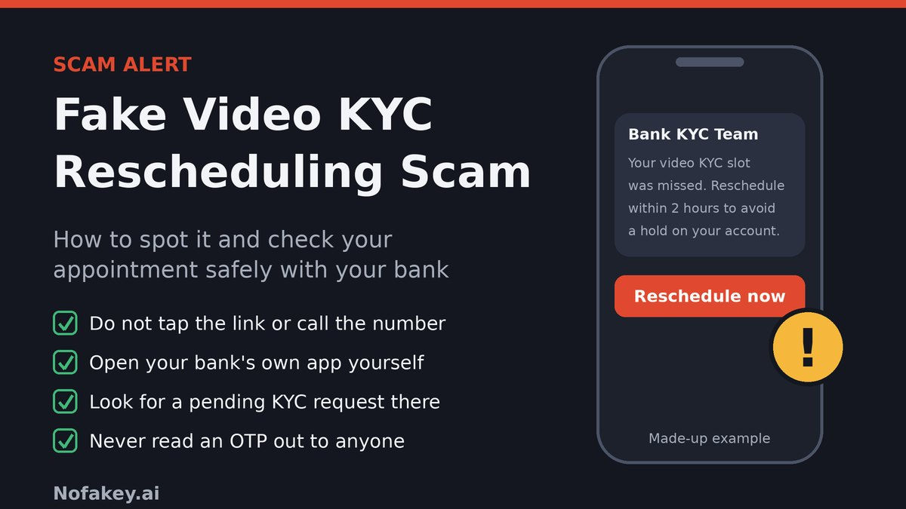

"Your video KYC slot was missed. Reschedule within 2 hours to avoid a hold on your account." If you applied for a credit card, a loan or a new account recently, this can feel completely normal. Even if you did not, a polite, administrative message about an appointment is easy to answer without thinking. That is the point. The scammer is not asking for your password in the first message. They are asking you to pick a new time, and the link, app or call that follows does the rest.
What is the fake video KYC rescheduling scam?
KYC stands for "Know Your Customer", the identity check banks and other regulated lenders must carry out. Video KYC, which the Reserve Bank of India calls the Video-based Customer Identification Process (V-CIP), lets an authorised bank official verify you over a live, consent-based audio-visual interaction instead of a branch visit. Because it involves a live call, documents and a face, it is an obvious thing for criminals to imitate.
The "rescheduling" version adds a pretext that sounds harmless. Instead of saying "your KYC has expired", the message says your appointment needs to be moved, confirmed or redone. It usually comes in one of two flavours:
- The link flavour. A message sends you to a fake slot-booking page or asks you to install a "KYC app". The page collects your details and then an OTP.
- The call flavour. A "bank executive" phones or video-calls you on WhatsApp to "do the KYC now", asks you to show documents, and may ask you to install a screen-sharing or remote-access app.
The wider KYC-update scam is well documented. The RBI has warned the public about unsolicited calls, SMSs and emails that ask for personal or login details, card information, PIN and OTP, or that push people to install unverified apps through a link, often with threats of account freeze or closure. Rescheduling is the same trick with a new story on top.
How the scam works, step by step
- The hook. An SMS, WhatsApp message, email or call says your video KYC was missed, cancelled or needs a new slot. It may arrive just after you really did apply for something, or completely out of the blue.
- The pressure. A short deadline and a consequence: a card hold, an account restriction, a cancelled loan.
- The link, app or number. A shortened link, a lookalike slot-booking page, an APK file described as the "KYC app", or a WhatsApp number of a "KYC officer".
- The collection. The page asks for your name, mobile number, account or card details and then says an OTP has been sent "to confirm your slot". That OTP may in fact be for a login, a payment or an Aadhaar authentication that the scammer has just started. You may also be asked to upload Aadhaar, PAN and a selfie.
- The live call. A video call "to complete the KYC" in which you show documents and your face, and may be asked to share your screen, read out codes or install an app.
- The drain and the follow-up. Money can leave within minutes. Victims are sometimes called again by a "refund team" or "cyber cell" who ask for more codes.
Cases that show the pattern
Reported cases do not all use the word "reschedule", but the mechanics match. Police in Palghar, Maharashtra registered a case after a man received a WhatsApp video call from an unknown number, was told it was for e-KYC, was induced to install a remote-access app and then lost more than ₹7 lakh across 13 transactions, as reported by the Free Press Journal. BOOM Live described a case in Port Blair where a scammer used a WhatsApp video call to build trust and then extracted an OTP, which was used to move over ₹2 lakh. Kerala Police have also warned about fake KYC SMS links that lead to a form, then an OTP, then a call from a fake bank official asking for that OTP.
What scammers are after
| What they get | How they use it |
|---|---|
| Net banking or card details | Logging in or paying from your account, or preparing a transfer that needs only one more code |
| OTPs | Completing a login, payment or Aadhaar authentication they started. The code you receive is for their attempt, not for your slot. |
| Aadhaar, PAN and a selfie | Trying to open accounts, get loans or SIM cards in your name, or making later calls sound credible |
| Remote access to your phone | Watching your screen, reading codes as they arrive and moving money while you are on the call |
| Your number and personal details | Follow-up scams that already know your name, bank and recent activity |
What a genuine video KYC looks like, and what a fake one does differently
Most warnings say "never trust KYC messages" without explaining what a real process involves. That leaves people unsure when they genuinely do have a pending request. These points come from RBI's Master Direction on KYC as amended, and from how banks describe it. Your own bank's process may differ in detail, so always confirm it inside your bank's app.
| What to check | Usually genuine | Warning sign |
|---|---|---|
| Who starts it | You, after applying for an account, card or loan, or a request you see when you sign in | An unexpected message, call or ad you did not trigger |
| Who conducts the call | An authorised official of the bank in a live, consent-based session. RBI's direction requires the recording to carry live GPS co-ordinates and a date-time stamp. | A person on a personal WhatsApp or mobile number, with a uniform-style profile photo |
| Where it happens | The bank's own secured platform, reached from its app or website. Summaries of RBI's direction describe the process as running through the bank's website or app. | A separate link, a shared-screen session or a downloaded file |
| What identification is used | Documents shown live, plus methods such as Aadhaar OTP authentication or offline Aadhaar verification, inside the flow you opened yourself | Photos of documents sent over chat, or OTPs read out to a person |
| What it never needs | Card PIN, CVV, UPI PIN or your net banking password | Any of those, or a remote-access or screen-sharing app |
| Deadline | Time to check and rebook through the bank | Minutes or hours, then a block, hold or cancellation |
| Contact details | On the bank's official website, in its app, or on your card | Only inside the message |
A fair warning about OTPs. A genuine video KYC can involve an OTP for Aadhaar-based authentication. That OTP is entered by you, inside a session you opened on the bank's official app or site. The warning sign is an OTP you are asked to read out to a person, send in a chat, or type into a page that came from a message.
Realistic scam message examples
These are composite examples written to show the pattern. They are not reports about real people or real banks, and the numbers and addresses are made up.
Example 1: The "slot missed" SMS
- From
- An ordinary mobile number, or a sender name made to look like a bank
Dear Customer, your Video KYC (Ref VK-48213) was not completed at the scheduled time. Reschedule within 2 hrs to avoid card hold: vkyc-slot-reschedule.example/book
Why it's a scam: a reference number that means nothing, a 2-hour deadline, a threat to your card and a link on a domain that is not your bank's. A genuine request would also appear inside your bank's app.
Example 2: The WhatsApp "KYC officer" and the app file
- Channel
- WhatsApp, from a number saved nowhere in your phone
Sir, good afternoon. I am from the KYC department. Your video KYC could not be done. Please install the Slot Update app (KYC_Slot.apk) and confirm a new time so your account is not restricted.
Why it's a scam: banks distribute apps through the official app stores, not as files sent in chat. An installed file like this can read your messages, including OTPs, or give someone control of your phone.
Example 3: The "appointment cancelled" email
- From
- "KYC Desk" <kyc-desk@bank-support-team.example>
- Subject
- Video verification appointment cancelled: select a new slot
Your appointment has been cancelled due to a technical issue. Select a new slot using the button below. Failure to do so may lead to temporary restrictions on your account.
Why it's a scam: the sender's domain does not match the bank, the issue is vague and there is a restriction threat. Hover over or press and hold the button to see where it really goes before you do anything else.
Example 4: The call that "confirms the slot" with an OTP
- Channel
- Phone call, then a WhatsApp video call
"Sir, your video KYC reschedule is pending. I am sending a code to confirm your slot. Please read it out. After that we will do a quick video call, so keep Aadhaar and PAN ready and share your screen so I can guide you."
Why it's a scam: reading out a code, showing documents to a caller who contacted you, and sharing your screen are the three things that hand over your account. End the call and check through the bank's own app.
Example 5: The "pre-approved card or loan on hold" variant
- Channel
- SMS or WhatsApp
Your pre-approved card is on hold because video KYC is pending. Rebook your slot here and pay a refundable verification fee of ₹10 to confirm.
Why it's a scam: a tiny "refundable fee" is a way to get you into a payment or UPI screen, or to collect card details. Genuine KYC is not charged to the customer in this way.
Warning signs of a fake rescheduling request
- You did not trigger it, and there is no matching application, account or card request you can recall.
- The deadline is measured in minutes or hours, with a block, hold or cancellation as the penalty.
- The link is shortened, or its domain is not your bank's own.
- It asks you to install something, especially a file ending in
.apk, or a screen-sharing or remote-access app. - It asks for an OTP on a call or in a chat, or for a card PIN, CVV, UPI PIN or password at any point.
- The "officer" uses a personal number on WhatsApp, a staged profile photo or a vague title such as "KYC department".
- It asks you to share your screen or keep the call running while you open your banking app.
- There is a small fee to book or confirm the slot.
- The writing is off: odd grammar, generic greetings, or a reference number that matches nothing in your records.
- It tells you not to contact your branch or insists you stay on the line.
How to check a suspicious link
- Do not tap it. Press and hold the link to read the address without opening it.
- Find the domain. It is the part right after
https://and before the first single/. Inhttps://hdfc.kyc-slot.in/book, the real site iskyc-slot.in, not the bank whose name appears at the front. - Read the ending first. The last parts decide who owns the page. Anything in front can be made up by the sender.
- Compare with your bank's real address. Take it from your bank's app, your debit card, your passbook or a bookmark you made earlier, never from the message or a search ad.
- Watch for added words and odd endings: "kyc", "slot", "reschedule", "verify" or "secure" attached with hyphens, or endings such as
.top,.xyzor.click. - Treat any file download as a red flag. A genuine KYC process does not ask you to open an
.apkfile. - Do not rely on the padlock. https means the connection is encrypted. Fake pages can have it too.
- Be careful with shortened links, QR codes and "chat me" links, which hide the real destination.
Try the link scanner
Paste a link and, if you know your bank's real address, enter that too. The tool compares them and looks for common tricks. It reads the text only. It does not open the link, and nothing you paste leaves your browser.
How to confirm a video KYC appointment directly with your bank
If you think you might have a genuine request, go to the bank yourself. Do not reply to the message and do not use any link or number inside it. If you cannot find a request through the routes below, you do not need to do anything.
Option 1: The bank's official app
Install the app only from the official app store listing, or open the one you already use. Sign in and look in notifications, service requests, the profile or KYC section, or any banner about pending verification. A genuine request will normally show up here and let you finish it inside the app.
Option 2: The bank's official website
Type the address yourself or use a bookmark you made earlier. Sign in to net banking and look for the same kind of notice. Do not use a link from a search advert or a forwarded message.
Option 3: A customer care number from a trusted source
Call the number printed on the back of your debit or credit card, in your passbook or chequebook, or on the bank's official website. Numbers that appear in a message, a search result or a social media post can belong to the scammer. This guide does not list bank numbers on purpose, because they change and you should take them from your own card or the bank's own site.
Option 4: Your branch
If you are unsure, visit the branch with your usual ID. Branch staff can tell you whether a KYC request exists and how to complete it.
What to ask when you contact the bank
- Is there a pending or scheduled video KYC against my account, card or application? What is the reference and date?
- Through which app or site screen should I complete it?
- Did the bank send me this message? (Read out the sender and wording, but do not forward any codes.)
- Can you note this message as a suspected fraud attempt?
Note the date, time, name or ID of the person you spoke to, and any reference number the bank gives you.
If the request is genuine
Complete it only through the bank's own app or website, in a quiet place with your original documents. You should not need to install a separate app, share your screen, give a card PIN or UPI PIN, or read an OTP out to anyone. If anything in the session asks for those things, end it and call the bank on the number from your card.
Where did the request come from?
Prevention tips
- Never read an OTP out to anyone, including a caller who says they are from the bank, a "KYC officer" or the RBI.
- Never share a card PIN, CVV, UPI PIN or net banking password. RBI's public awareness messages state that banks and payment operators do not ask for these.
- Do not install apps from links or files in chats. Use only your phone's official app store, and be wary of any app that asks to control or watch your screen.
- Do not show Aadhaar, PAN or a selfie to a caller who contacted you. Share documents only inside a bank process you started.
- Save your bank's real website and customer care number in your phone yourself, so you never need to search for them under pressure.
- Turn on transaction alerts by SMS and email for every account, card and UPI app.
- Slow down. A real KYC request will still be there after you check it. Urgency is how scams work.
- Talk to family members who are less used to digital banking, and agree that anything about "KYC" gets checked with the bank first.
- Report suspicious messages through Chakshu on the Sanchar Saathi portal so the numbers can be acted on.
What to do if you clicked, shared an OTP, installed an app or lost money
Act quickly, and do not be embarrassed. These scams are designed to look routine and they catch careful people too. Speed matters most in the first hour, because money can be moved onward fast.
In the first hour
- Call your bank on the number from your card or passbook. Ask it to block your cards, UPI and net banking, and to act on any transfers you did not make.
- Call the national cyber crime helpline 1930 or file a report at cybercrime.gov.in. The Chakshu page on Sanchar Saathi also points victims who have lost money to 1930 and cybercrime.gov.in.
- Stop any remote session. If you installed an app or shared your screen, switch on airplane mode and uninstall the app. Do not open the file again.
- Do not take calls from anyone offering to "recover" your money. Follow-up calls from a refund team or cyber cell asking for more codes are a second scam.
In the next 24 to 72 hours
- Change your net banking, UPI and email passwords, ideally from a device you trust, and reset your UPI PIN. Check the phone for unknown apps, and consider a factory reset if you are unsure it is clean.
- Send your bank a written complaint listing the transactions, dates and times, and keep the acknowledgement. RBI's circular on unauthorised electronic banking transactions ties customer liability to how quickly you report. It gives zero liability in some third-party breach cases reported within three working days. Where the loss followed the customer sharing credentials, the customer generally bears the loss until the transaction is reported. Report fast, but do not assume a refund.
- Keep evidence: screenshots of the messages, the sender number, the link, call logs and transaction details.
- Report the message itself through Chakshu on Sanchar Saathi. The portal asks for reports within 30 days of receiving the communication, and it is for suspected fraud communication, not for reporting money already lost.
If you showed or sent Aadhaar, PAN or a selfie
- Lock your Aadhaar biometrics through UIDAI's myAadhaar services and review your Aadhaar authentication history for uses you do not recognise.
- Check which mobile connections exist in your name with the TAFCOP facility on Sanchar Saathi.
- Check your credit report with the credit bureaus for accounts or enquiries you did not make. You are entitled to a free full credit report once a year from each bureau.
- Tell your bank that your documents were exposed so it can watch for misuse.
If the bank does not respond, or you are unhappy with its reply, you can take your complaint further through the RBI's complaint management system at cms.rbi.org.in.
Tell me what happened
Where to report in India
| Who | Use it for | How |
|---|---|---|
| Your bank | Blocking cards, UPI and net banking, and disputing transactions | The number on your card or passbook, or your branch |
| National cyber crime helpline | Reporting online financial fraud quickly | Call 1930 |
| National Cyber Crime Reporting Portal | Filing a complaint, with evidence | cybercrime.gov.in |
| Chakshu (Sanchar Saathi, DoT) | Reporting suspected fraud calls, SMS and WhatsApp messages | sancharsaathi.gov.in/sfc |
| RBI complaint portal | Escalating an unresolved complaint about a bank | cms.rbi.org.in |
| CERT-In | Security advisories and cyber incident reporting | cert-in.org.in |
| Local police | A written complaint or FIR | Your nearest police station or cyber cell |
Contact details can change, so check the official websites above for the latest.
Conclusion
The fake video KYC rescheduling scam works because a request to "move an appointment" sounds like admin, not danger. You do not have to judge every message. Treat any unexpected request to reschedule, confirm or complete video KYC as unverified, open your bank's own app or type its website yourself, and look for the request there. Never read out an OTP, install a file from a chat, share your screen or hand over a card PIN. If something has already gone wrong, call your bank and 1930 straight away.
Related scams use the same pressure. Read our guides on the fake digital identity verification link scam, the fake identity reverification scam, the fake QR code verification scam and the fake customer support chat scam.
Got a message you are unsure about? Paste the text into our free checker for a quick first read.
Frequently asked questions
What is the fake video KYC rescheduling scam?
It is a scam where a message or call says your bank video KYC appointment was missed, cancelled or must be rescheduled, then pushes you to a link, an app or a live video call. The aim is to collect your OTPs, banking details, KYC documents or remote access to your phone.
Can a real bank ask me to reschedule a video KYC?
Yes, if you have a genuine pending request such as a new account, card or loan, a bank may ask you to complete or rebook a video KYC. The safe way to check is to open the bank's own app or website yourself, or call the number on your card, instead of using a link or number in an unexpected message.
Is it safe to share an OTP during a video KYC?
Never read an OTP out to a caller or type one into a page you reached from a message. RBI's rules allow Aadhaar OTP-based authentication as part of a genuine video KYC, but that happens inside a process you started yourself on the bank's official app or website, and no one needs you to say the code aloud.
How do I confirm a video KYC appointment with my bank?
Ignore the message, then open your bank's official app or type its website address yourself and look for a pending KYC request. You can also call the customer care number printed on your debit card or passbook, or visit your branch. If no request exists there, treat the message as a scam.
I shared an OTP or installed an app. What should I do first?
Call your bank on the number printed on your card and ask it to block your cards, UPI and net banking, then call the national cyber crime helpline 1930 or report at cybercrime.gov.in straight away. Speed matters because money can be moved on quickly. Remove any remote-access app and change your passwords afterwards.
Will my bank refund the money if I was scammed?
It depends on the facts. RBI's circular on customer liability gives zero liability in some cases of third-party breach reported within three working days, but where the loss follows the customer sharing credentials, the customer generally bears the loss until the transaction is reported. Report quickly, put your complaint in writing and do not assume a refund.
This guide is general information, not legal or financial advice. Bank processes differ, so follow the instructions inside your own bank's official app or website.
Got a KYC message you want checked?
Run it through the checker